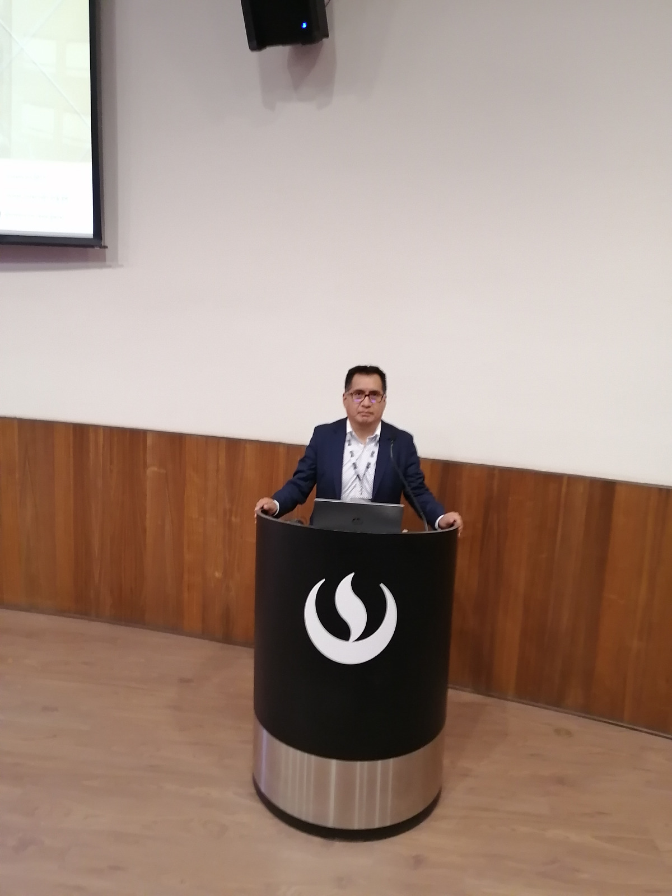

Asesoría Académica Universitaria
Guía experta en cada etapa de tu proceso de investigación. Desde la formulación del problema hasta la sustentación final.

Sobre el asesor
Con más de 15 años de experiencia en investigación académica y asesoría de tesis universitarias, he acompañado a cientos de estudiantes a concluir con éxito sus proyectos de grado en diversas áreas del conocimiento.
Mi enfoque combina rigor metodológico con acompañamiento personalizado, adaptando el proceso a las necesidades específicas de cada investigación y cada estudiante.
Contenido académico
Recursos gratuitos para apoyar tu proceso de investigación y redacción de tesis.
¿En qué te ayudo?
Acompañamiento integral en cada etapa de tu investigación académica.
Acompañamiento personalizado desde la elección del tema hasta la sustentación final de tu tesis de grado o posgrado.
Orientación experta en el diseño y aplicación de la metodología de investigación adecuada para tu estudio.
Asistencia en la búsqueda y gestión de fuentes bibliográficas académicas confiables y actualizadas.
Corrección y mejora del estilo, coherencia y normas APA de tu documento académico.
¿Listo para empezar?
Agenda una consulta gratuita y conversemos sobre tu proyecto de investigación.
Estoy disponible de lunes a viernes. Respondo en menos de 24 horas.
La forma más rápida de coordinar tu primera consulta gratuita.
Iniciar conversación Enviar correo